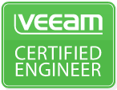
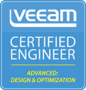
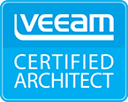
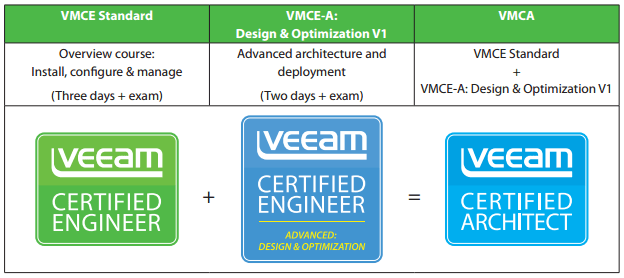

Certificações Veeam - VMCE | VMCE-A D&O | VMCA
VeeamCompartilhe esse post nas redes sociais...

Olá Homelabers!
Dando continuidade na série sobre Veeam, hoje vou falar um pouco sobre as certificações técnicas oferecidas pela Veeam.
Sinceramente, não sei o quanto essas certificações são populares no Brasil. Mas de qualquer maneira, a Veeam é uma empresa que está crescendo muito no mundo e no também no Brasil e profissionais técnicos certificamos, sempre são valorizados no mercado. Eu pedi informações a Veeam, mas ainda não tive nenhuma resposta. Assim que tiver acesso aos números, atualizo esse post.
Update: A Veeam me respondeu e os números são os seguintes:
A partir de Outubro de 2014:
LATAM - 508 pessoas tem a formação VMCE e 51 tem certificação.
Brasil - 104 pessoas tem a formação VMCE e 10 tem a certificação.
O programa de certificações técnicas da Veeam teve início em Outubro de 2014. Atualmente existem 3 certificações disponíveis:
Veeam Certified Engineer (VMCE) Veeam Certified Engineer - Advanced: Design & Optimization (VMCE-A: D&O) Veeam Certified Architect (VMCA)
Veeam Certified Engineer (VMCE)

O primeiro degrau nas certificações da Veeam é o Veeam Certified Engineer (VMCE)
A certificação VMCE é uma prova de que um engenheiro possui o nível de especialização necessário para implantar, configurar e administrar corretamente o Veeam® Availability Suite ™ V9.
O exame VMCE inclui 50 perguntas e é necessário atingir a pontuação mínima de 70% para ser aprovado. O exame deve ser feito em uma unidade de teste local da Pearson VUE.
Para fazer a prova, um dos pré-requisitos é fazer o treinamento presencial (Instructor Lead Training - ILT) ou o treinamento online (Video On Demand Learning - VODL). No Brasil a Westcon oferece os cursos Presenciais e On-Line.
Uma informação importante, tanto o curso, quanto a prova são em Inglês. Até o momento não existe a opção em Português.
Mais informações (material em Inglês):
Veeam Certified Engineer - Advanced: Design & Optimization (VMCE-A: D&O)

O segundo degrau na carreira de certificações Veeam é o Veeam Certified Engineer - Advanced: Design & Optimization (VMCE-A: D&O)
O foco dessa certificação é voltado em projetar e otimizar a solução Veeam Availability Suite, seguindo as práticas recomendadas pelo time de Veeam Solutions Architects.
O exame VMCE-A: D & O inclui 40 perguntas e é necessário atingir a pontuação mínima de 70% para ser aprovado. O exame deve ser feito em uma unidade de teste local da Pearson VUE.
Mais informações:
VMCE-A: D&O v1 course description
Veeam Certified Architect (VMCA)

O VMCA - Veeam Certified Architect é o último degrau de certificações da Veeam. Para alcançar essa certificação é necessário ter realizado os cursos e obtido a pontuação mínima nas provas de VMCE + VMCE-A D&O.

Vantagens
De acordo com o site da Veeam, os benefícios para os profissionais certificados são:
* Sem fila para o suporte por telefone: Acesso direto ao suporte para problemas críticos no local
* Designação especializada dentro da indústria para serviços profissionais
* Uso de logotipo do VMCE, VMCE-A: D & O e VMCA
É isso pessoal! Espero que tenham gostado de mais esse post da série sobre Veeam aqui no blog!
Até a próxima
VC
Compartilhe esse post nas redes sociais...Valdecir Carvalho
Nerd e pai orgulhoso da Mariana e João. Profissional Sênior de TI com foco em arquitetura de infraestrutura e cloud computing. Blogueiro, podcaster, palestrante, amante de comunidades técnicas, fotógrafo aposentado e adora jogos antigos.
#vExpert · #VMUGLeader · #VUGBrasil · #vBronwBagBrasil · #VeeamVanguard